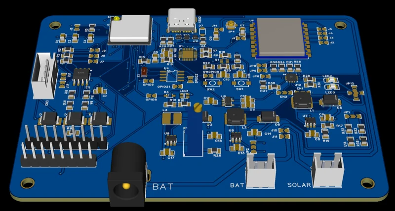
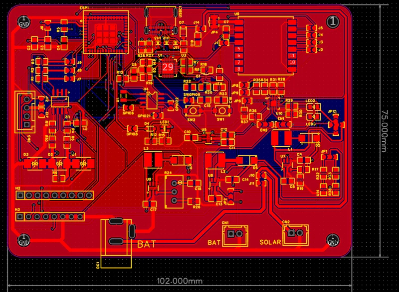
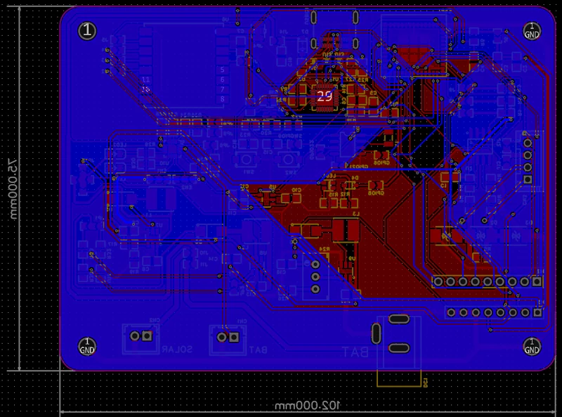
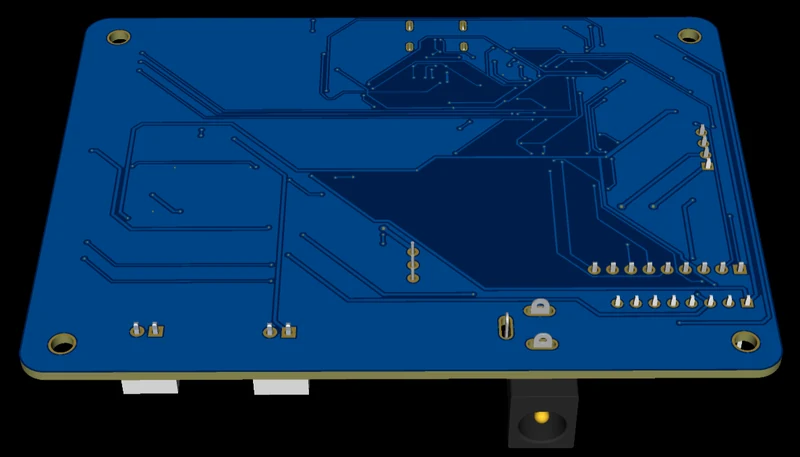
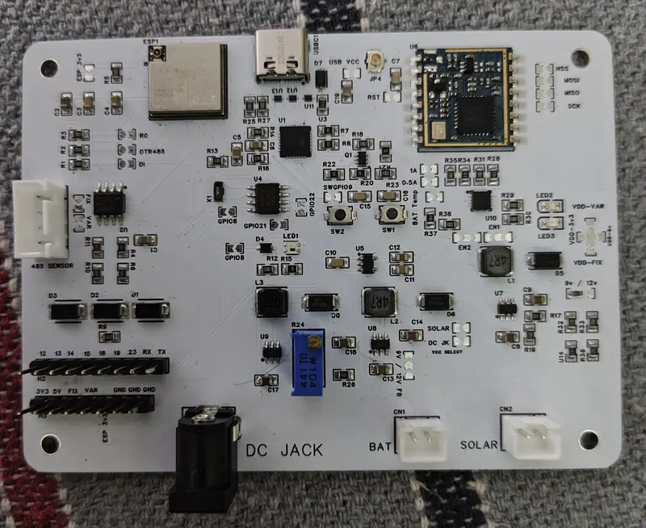
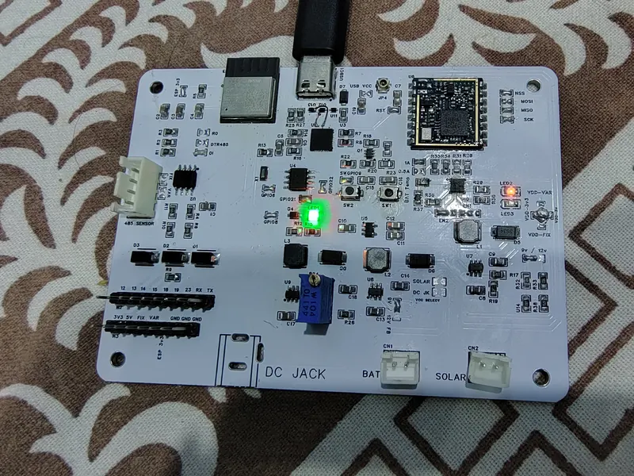
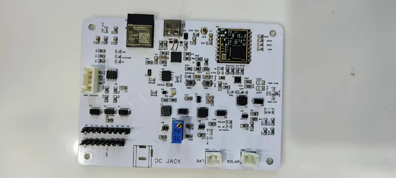

U3 · M.Tech capstone · Revision 1 of 3
AgroSense Node rev 1
The two-layer prototype that started the AgroSense line — scheduled soil and climate sampling, RTC-driven deep sleep, solar charging and a long-range uplink to a gateway.

Where it sits
The AgroSense node went through three revisions: rev 1 was a 2-layer prototype, rev 2 moved to four copper layers, and rev 3 is the one in the field. Each build folded in what the previous one's bring-up found rather than patching faults on the bench.
Rev 1 is the two-layer prototype — the one that had to prove the idea held together before spending four layers on it.
What it did
Measure soil moisture, water level, temperature and humidity at set intervals and send them to a gateway, instead of someone walking the field with a meter. Controller, radio, real-time clock, solar charging and the wired sensor interface all on one board.
It was built around being asleep most of the time: an RTC wakes the controller on schedule and the board drops back into deep sleep between readings. That's the difference between a node that lasts a season and one that needs a visit every fortnight.
What it led to
The two-layer layout worked but left no room to improve the radio's reference plane, and the power tree was tighter than it wanted to be. Both fed straight into rev 2.
Gallery





